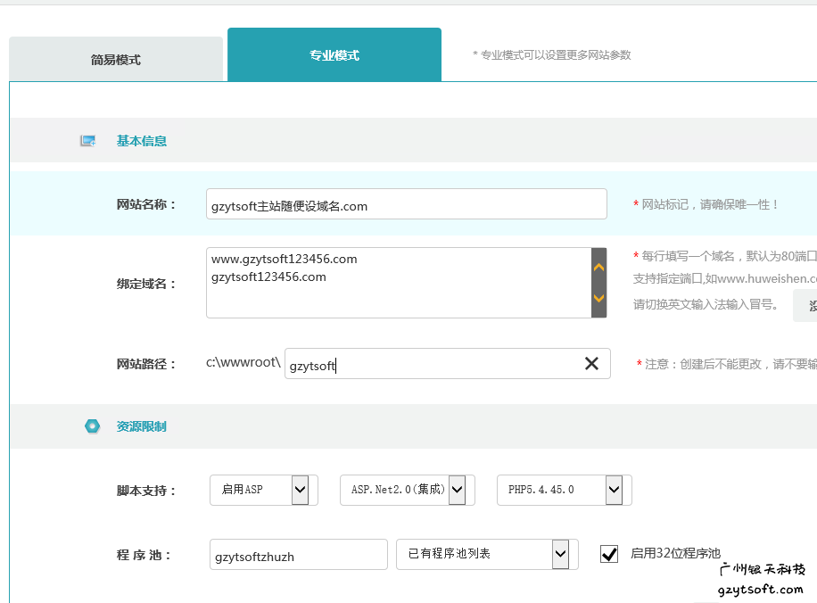
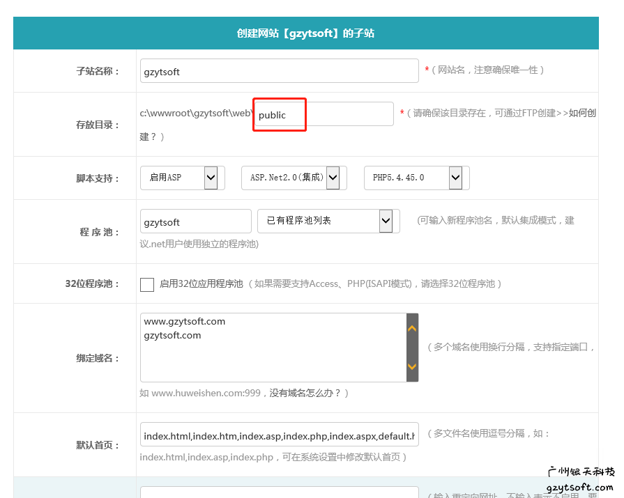
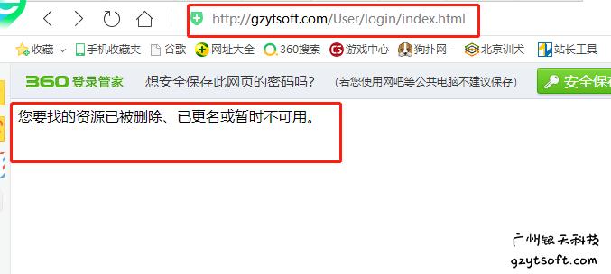
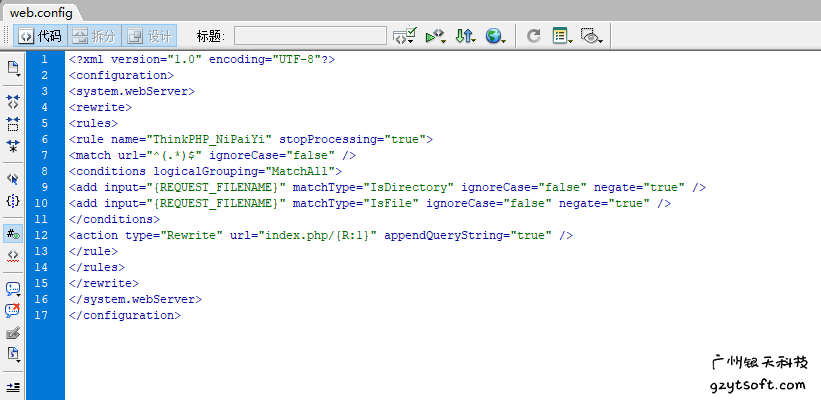

护卫神等IIS设置Thinkphp框架的public目录为根目录的解决办法原文出处:本文由博客园博主IT部小周提供。
原文连接:https://www.cnblogs.com/itmrzhou/p/10833296.html
最近碰到一个棘手的问题，在使用护卫神或者主机宝等IIS环境配置PHP的时候，不能把public设置为网站根目录（因为Thinkphp的安全要求：要将public设置为对外公开目录），这个问题无法搜索到真实解决办法，那么我们应该如何将运行目录设置为/public呢？
当我们使用护卫神的IIS配置Thinkphp时，发现Thinkphp的运行目录public在护卫神里无法设置为运行目录，系统创建的网站默认根目录为web里面的内容。银天科技小编经过大量的试验，终于找到到最终的解决办法。
其实护卫神是使用IIS来部署THINKPHP的，所以所有使用IIS部署的网站，用这个方法也一样可以有效解决。
一、我们需要创建一个域名为其他的网站（如下图）

二、在网站里建一个子站，自站的目录是public，域名填写你真实的域名（如下图）

三、运行网站，这时候的网站能访问，但是你会发现内容不跳转，访问域名+Index.php能访问，但是访问域名却报404之类的错误，原因在于route，也就是url重写，伪静态不生效（如下图）
四、我们只需要在public里面创建一个web.config文件，注意文件的编码跟上网站的编码，web.config里面的内容如下，（此处无法给出下载连接，有需要的请到原文提供的下载连接下载）

五、这时候再访问域名，你就会发现伪静态已经生效了，网站部署也已经大功告成了！
这个方法适用于使用IIS部署TP5，护卫神部署TP5。
原文出自https://www.gzytsoft.com/a/news/zhanchangshizhan/2019/0507/646.html，转载请标明出处。